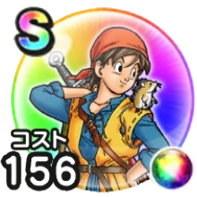

エイト
ドラクエ8ReWALKこころ最大コスト+4スキルの斬撃・体技・ブレスダメージ+8%全属性ダメージ+4%ドラゴン系へのダメージ+8%呪い耐性+30%Lv8ごとにちから+2Lv8ごとにきようさ+2 / 9.0点
くわしい特徴
【ランク特殊効果】 こころ最大コスト+4スキルの斬撃・体技・ブレスダメージ+8%全属性ダメージ+4%ドラゴン系へのダメージ+8%呪い耐性+30%Lv8ごとにちから+2Lv8ごとにきようさ+2

ドラクエ8ReWALKこころ最大コスト+4スキルの斬撃・体技・ブレスダメージ+8%全属性ダメージ+4%ドラゴン系へのダメージ+8%呪い耐性+30%Lv8ごとにちから+2Lv8ごとにきようさ+2 / 9.0点
【ランク特殊効果】 こころ最大コスト+4スキルの斬撃・体技・ブレスダメージ+8%全属性ダメージ+4%ドラゴン系へのダメージ+8%呪い耐性+30%Lv8ごとにちから+2Lv8ごとにきようさ+2